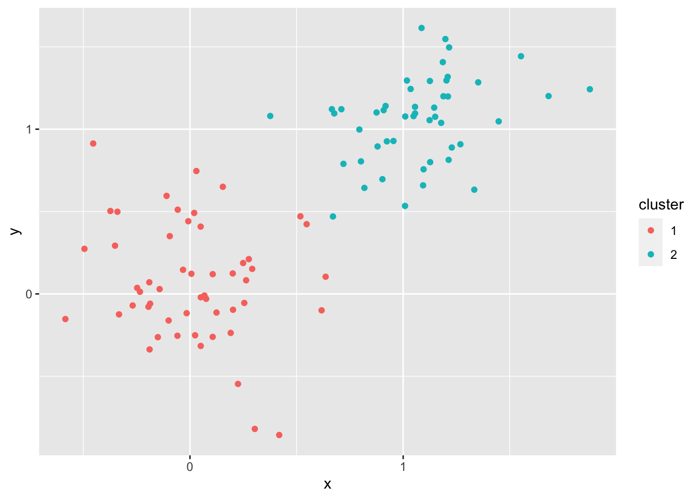

Machine learning
1 Machine learning
The field of machine learning began to take hold around the middle of the 20th century. Like the field of computer science, mathematicians were at the forefront of laying the foundations which have eventually led to the many creature comforts we are experiencing today. Every time you cash a check at an ATM or on a cell phone, for instance, a machine learning is at work, using loads of previous written digits as training data to guess what you meant to write with astounding accuracy. Almost every major business uses machine learning to direct you to finding the right person to speak to on the telephone (alright, alright, often that process is incredibly annoying, but apparently it cuts down on total time on the phone, or the business wouldn’t be using it). Phone apps use machine learning to identify songs after a few seconds. There’s even an app for identifying species by simply taking a snapshot in a garden! Machine learning will be at the forefront of what types of jobs we will all be doing in the future.
It won’t all be roses, of course. Plenty will be displaced, and it’s a serious question of what we’re going to do with truckers when self driving cars are prevalent. Other professions that you might not expect may be on the chopping block too. Machine learning algorithms are already beating doctors in identifying tumors, and there are plenty of opportunities for automation to replace soldiers (this too, is loaded with ethical dilemmas). It’s unfortunate that the reduction of labor, what of first blush seems to be an absolute good, might cause a good deal of hardship in the future. Data scientists are obviously going to be needed in developing all of this automation, but we’ll also need very bright people to figure out how to transition through this with as little turbulence as possible.
Alright, enough of the doom and gloom. Let’s get into the meat of machine learning. We’re going to go over the bare bones of two basic methods in machine learning, k-means and k-nearest neighbors.
2 \(k\)-nearest neighbors
The algorithm of \(k\)-nearest neighbors (Knn) is a type of clustering algorithm. The main question is as follows: Given a element with certain features, predict a labeling. Knn, unlike logistic regression, is nonparametric. The \(k\) in \(k\)-nearest neighbors gives a tuning parameter. This is something we start off with–in parametrized models we learn the parameter through training.
The idea is that given a point, we predict its label by guessing the labels of nearby datapoints in the training set. We can visualize a decision boundary in two dimension, but it is still possible to preform this in high dimensions.
A few points before we dig in:
- The distance between two datapoints has a great deal of wiggle room. We can define a distance using any metric \(d(x,y)\ge 0\) satisfying
Examples abound. For two vectors, the most common metric is the Euclidean metric \[\begin{equation} d(\mathbf x, \mathbf y) = \sqrt{(x_1-y_1)^2+(x_2-y_2)^2+\dots+(x_n-y_n)^2}. \end{equation}\]

An example of knn with k = 3 and k = 5 (Image courtesy of Wikipedia)
Q: Under different \(k\), how ought we label the unclassified green circle?
3 Knn on the iris dataset
We’ll need the class package for running knn.
library(class)# Some minor changes in the data set
# Normalizing variables
#Question: what does the -5 mean?
dataNorm = iris
dataNorm[,-5] = scale(iris[,-5])
#To make sure we can get repeatable (reproducible) results
set.seed(1234)
#This is picking (approximately) 70% of data to be training data.
#What should you do if you always want fraction to be the same?
ind = sample(2, nrow(dataNorm), replace = TRUE, prob = c(.7, .3))
trainData = dataNorm[ind == 1, ]
testData = dataNorm[ind == 2, ]
#knn with k = 3
Knntestpredict = knn(trainData[,-5], testData[,-5],
trainData$Species, k = 3, prob = TRUE)
Knntestpredict## [1] setosa setosa setosa setosa setosa setosa
## [7] setosa setosa setosa setosa versicolor versicolor
## [13] versicolor versicolor versicolor versicolor versicolor versicolor
## [19] versicolor versicolor versicolor versicolor virginica virginica
## [25] virginica virginica versicolor virginica virginica virginica
## [31] virginica virginica versicolor virginica virginica virginica
## [37] virginica virginica
## attr(,"prob")
## [1] 1.0000000 1.0000000 1.0000000 1.0000000 1.0000000 1.0000000 1.0000000
## [8] 1.0000000 1.0000000 1.0000000 1.0000000 1.0000000 1.0000000 1.0000000
## [15] 1.0000000 1.0000000 1.0000000 1.0000000 1.0000000 1.0000000 1.0000000
## [22] 1.0000000 1.0000000 1.0000000 1.0000000 1.0000000 1.0000000 1.0000000
## [29] 1.0000000 1.0000000 0.6666667 1.0000000 0.6666667 1.0000000 1.0000000
## [36] 1.0000000 0.6666667 1.0000000
## Levels: setosa versicolor virginicaHere is the confusion matrix
table(testData$Species, Knntestpredict)## Knntestpredict
## setosa versicolor virginica
## setosa 10 0 0
## versicolor 0 12 0
## virginica 0 2 14The rows represent the actual species of plant, and the columns represent the estimates from knn. The more entries on the diagonal, the better. In our case, for \(k = 3\), we have correctly classified \(10+12+14 = 36\) plants. Two virginicas, however, have been misclassified as versicolor.
Q: For different values of \(k\), how does our confusion matrix perform. Is it true that the higher the \(k\), the better? What happens when \(k\) becomes very large?
4 K-means
The history of k-means is quite old: it goes at least as far back as the Polish mathematician Hugo Steinhaus in the 1950’s. The point of \(k\)-means is to do clustering without training. This means that our data is not labeled. It is simply a collection of points in some space. After initializing with \(k\) centroids, the two steps to k-means are
(Labeling) Compute a Voronoi diagram for centroids \(x_1, \dots, x_k\). This produces cells which partition \(C_1, \dots, C_k\) the plane and have the minimum distance property \[\begin{equation} x\in C_k \Rightarrow d(x,x_k) \le d(x,x_i), \quad i \neq k. \end{equation}\]
(Update) Reposition centroids to the average position of points in the Voronoi cells. \[\begin{equation} \frac{1}{|C_k|}\sum_{x \in C_k} x\leftarrow x_k . \end{equation}\]
The goal is to try clustering points which are close to each other. For a measure, we want to minimize
\[\begin{equation} \sum_{i = 1}^k \sum_{x \in x_k} d(x,x_k). \end{equation}\]
This minimization ensures that points in a cluster to be close to eachother, but points from two different clusters to be far apart as possible. K-means will converge to some local minimum of (3), but this may not be the global minimum.
4.1 A clear example in two-d
Let’s generate some points in which it should be clear how k-means will work
pts <- rbind(matrix(rnorm(100, sd = 0.3), ncol = 2),
matrix(rnorm(100, mean = 1, sd = 0.3), ncol = 2))
colnames(pts) <- c("x", "y")
X = data.frame(pts)
#testing for 8 clusters
cl <- kmeans(pts, 2)
X$cluster = as.character(cl$cluster)
X %>% ggplot(aes(x,y, color = cluster)) + geom_point()
Q: Obviously, \(k = 8\) isn’t the right \(k\). What is the correct \(k\)?
4.2 Iris dataset and k-means
What happens if we try classifying the iris dataset by k-means? This is a bit odd, since we are not using the labels at all!
clust = kmeans(scale(iris[-5]), 3)
clust$cluster## [1] 1 1 1 1 1 1 1 1 1 1 1 1 1 1 1 1 1 1 1 1 1 1 1 1 1 1 1 1 1 1 1 1 1 1 1 1 1
## [38] 1 1 1 1 1 1 1 1 1 1 1 1 1 3 3 3 2 2 2 3 2 2 2 2 2 2 2 2 3 2 2 2 2 3 2 2 2
## [75] 2 3 3 3 2 2 2 2 2 2 2 3 3 2 2 2 2 2 2 2 2 2 2 2 2 2 3 2 3 3 3 3 2 3 3 3 3
## [112] 3 3 2 2 3 3 3 3 2 3 2 3 2 3 3 2 3 3 3 3 3 3 2 2 3 3 3 2 3 3 3 2 3 3 3 2 3
## [149] 3 2Z = data.frame(clust$cluster, iris$Species)
#Let's tally what each cluster gets
tally = matrix(0,3,3)
for (i in 1:dim(Z)[1]){
q = Z[i,1]
tally[q,1] = tally[q,1]+ (Z[i,2] == 'setosa')
tally[q,2] = tally[q,2] + (Z[i,2] == 'versicolor')
tally[q,3] = tally[q,3] +(Z[i,2] == 'virginica')
}
print(tally)## [,1] [,2] [,3]
## [1,] 50 0 0
## [2,] 0 39 14
## [3,] 0 11 36